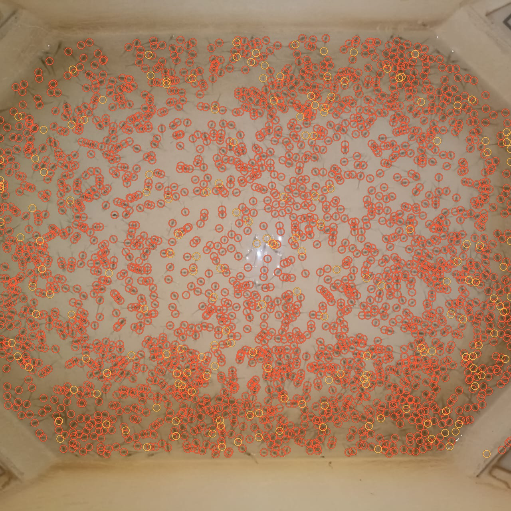
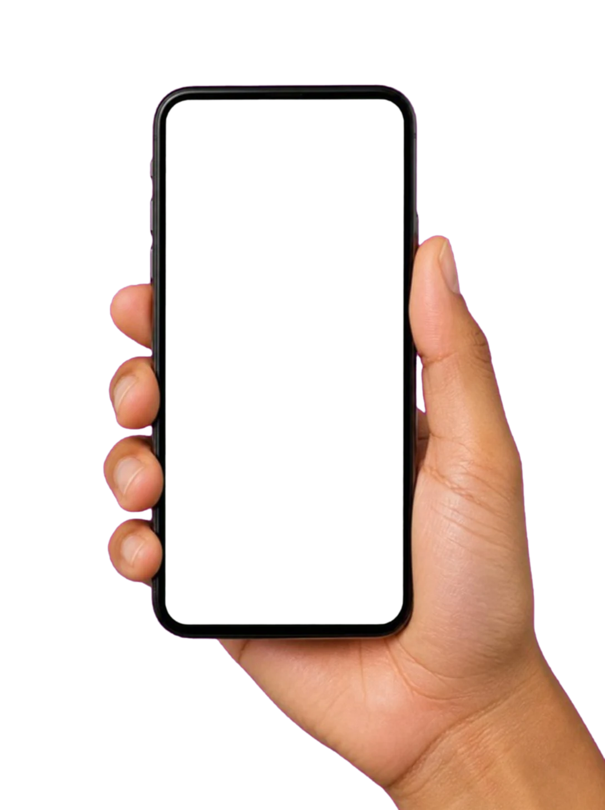

Hatcheries
Sell by count, with proof.
- Count a tray in seconds
- Proof behind every sale
- Report, certificate and invoice from one count
- Batches, quality checks, traceability


For shrimp hatcheries
One phone photo of the tray. A count your buyer can trust.
Live 3D demo. Every larva drawn here is counted by the page itself.
Inside one count
The photo
One phone photo of the tray. Nothing else.
Tray found
Walls, rim and glare are left out.
What the counter sees
Each larva shows up as a dark head spot.
2,191 head spots
Clumps are split, one spot per larva.
Every larva marked
Check the marks. Tap to add or remove one.
Counted on this tray
0
larvae. Every one marked on the photo.
Real output of our counter on one tray image.
15–20 min
per tray by hand, today
Seconds
Counts in seconds, not minutes
0 bars
Works with no signal
0
English, Telugu, Hindi and Tamil
The journey of one count
Today that count is done by hand, spoon by spoon.
Counted right at the start.
For farmers
Marked photo, count and certificate, on WhatsApp.
Hatchery flight is AI-generated video; inside the shed is 3D built from real hatchery photos; the dive is AI-generated video. Prawn, bubble and pond footage from Pexels.
Who gains
Hatcheries
Sell by count, with proof.
Farmers
Stock the pond with confidence.
Get the app
Install ShrimpCount on Android or iPhone. It opens from your home screen like any app, and keeps working with no signal.
Free. No app store account needed. Try free: 2 counts, no account needed. Works without signal.
On a computer? Scan to open it on your phone.
Honest about accuracy
Within 1% of an 1,800 hand count.
We are still testing other PL stages with hatcheries. Until you have compared it with your own hand count on your own trays, treat the number as an estimate.
Pricing
It is free during the pilot.
₹10,000
one-time setup - includes your first month
then ₹5,000 / month after that
Paid monthly, by UPI or bank transfer - no card on file. Try free first: 2 counts, no account needed.
Engineers, recruiters and students: the last three are for you.
You can take photos and count by tapping with no signal. The automatic count runs when you are back online.
Records stay on your phone. With an account they are backed up to a private space that only your hatchery team can open.
It is free during the pilot. Then ₹10,000 one-time setup including the first month, and ₹5,000 a month per hatchery.
No. You can count without one. An account only adds backup and sharing between phones.
Tap Install on this page. On iPhone, open the app in Safari, tap Share, then Add to Home Screen. No app store needed.
No. It counts the sample on a standard tray. A batch of samples gives the tank estimate.
Your hatchery can send the marked photo, the count report and the delivery certificate with your seed. You install nothing.
It finds the tray, removes the background, and looks for the dark head spot of each post-larva, since the body is almost transparent. Noise and faint tails are filtered by size and contrast, clumps are split by expected size for the PL stage, and a person confirms the marks. A classical OpenCV engine runs today; a YOLO11 detector (ONNX) must beat it on the same held-out batches before it ships.
Data is split by batch, never by random image, so the test set is a day the model has not seen. Only numbers from the evaluation script on held-out batches are quoted. No synthetic images stand in for real hatchery photos.
An offline-first React PWA, a FastAPI counting service, OpenCV and ONNX Runtime. This page uses three.js and GSAP.